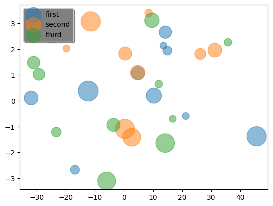
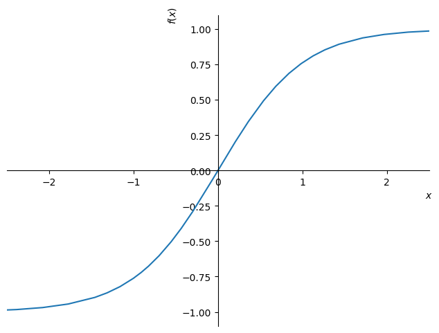
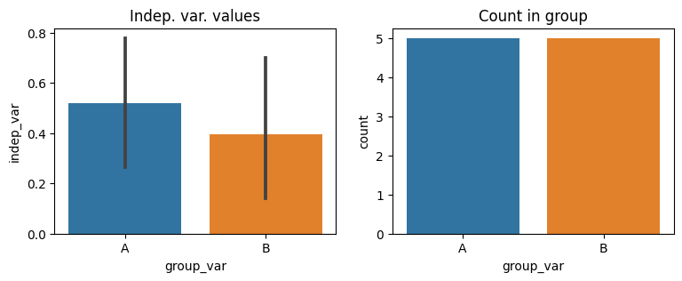
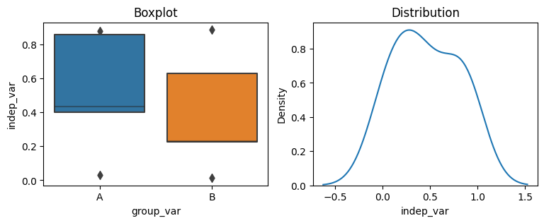
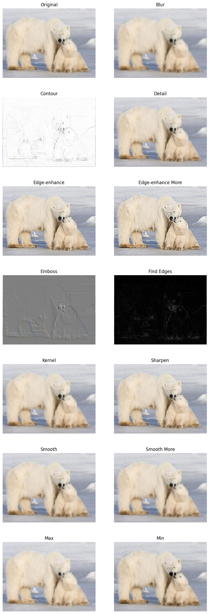
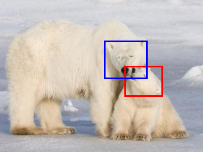

import numpy as npPlotting
Graphical production
Matplotlib
Scatter plotting
fig, ax = plt.subplots()
for label in ["first", "second", "third"]:
ax.scatter(np.random.randn(10)*20, np.random.randn(10)*2,
s=np.random.randint(10,30,10)**2, cmap=plt.cm.Spectral, alpha=0.5, label=label);
#Legend configuring
legend = plt.legend(loc='upper left', shadow=True)
frame = legend.get_frame()
frame.set_facecolor('0.50')
Sympy
Ploting functions from text description
sympy.plot("(exp(x)-exp(-x))/(exp(x)+exp(-x))", xlim=(-2.5,2.5))
<sympy.plotting.plot.Plot>Seaborn
First create a dataFrame with a continuous variable and a categorical variable to group the histograms
np.random.rand()
frame = pd.DataFrame(data=np.concatenate((np.random.rand(10,1),np.random.randint(0, high=2, size=(10,1))), axis=1), columns=['indep_var',"group_var"])
frame["group_var"] = pd.Categorical(frame["group_var"].apply(lambda x: "A" if x else "B"))Or use np.random.choice to select random values in a list-type
np.random.choice(['A','B'], size=10, replace=True) #, p=None -> prob_distributionarray(['B', 'B', 'A', 'A', 'A', 'B', 'A', 'B', 'A', 'B'], dtype='<U1')Barplots and Countplots from SNS
fig,axs = plt.subplots(1,2, figsize=(9,3))
sns.barplot(data=frame, y='indep_var', x="group_var", ax=axs[0]).set(title="Indep. var. values")
sns.countplot(data=frame, x="group_var", ax=axs[1]).set(title="Count in group");
Small detour - categorical variables’ inner code can be accessed through:
print(frame["group_var"].cat.categories)
frame["group_var"].cat.codes.valuesIndex(['A', 'B'], dtype='object')array([0, 0, 1, 0, 1, 1, 0, 1, 0, 1], dtype=int8)Box plot and distribution
fig,axs = plt.subplots(1,2, figsize=(9,3))
sns.boxenplot(data=frame, x="group_var", y="indep_var", ax=axs[0]).set(title="Boxplot")
sns.kdeplot(data=frame, x="indep_var", ax=axs[1]).set(title="Distribution");
PIL
Loading and applying built-in filters and the kernel
img = Image.open("bears.jpg").resize((400,300))#.rotate(-90)
filters = [
ImageFilter.BLUR,
ImageFilter.CONTOUR,
ImageFilter.DETAIL,
ImageFilter.EDGE_ENHANCE,
ImageFilter.EDGE_ENHANCE_MORE,
ImageFilter.EMBOSS,
ImageFilter.FIND_EDGES,
ImageFilter.Kernel(size=(3,3), kernel=[1,1,1,1,1,1,1,1,1]),
ImageFilter.SHARPEN,
ImageFilter.SMOOTH,
ImageFilter.SMOOTH_MORE,
ImageFilter.MaxFilter(size=3),
ImageFilter.MinFilter(size=3)
]
imgs = [(img, 'Original')] + [(img.filter(a_filter), a_filter.name) for a_filter in filters]
plt.figure(figsize=(10, 30))
for i, (image, label) in enumerate(imgs):
ax = plt.subplot((len(imgs)+1)//2, 2, i + 1)
plt.imshow(image)
plt.title(label)
plt.axis("off")
Drawing on the image
Drawer = ImageDraw.Draw(img)
Drawer.rectangle((245,130,320,190), fill=None, outline="red", width=3)
Drawer.rectangle((205,80,290,155), fill=None, outline="blue", width=3)
img